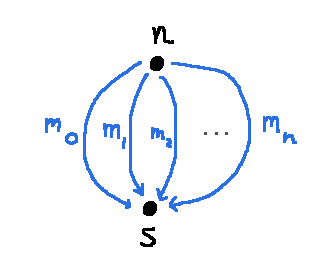
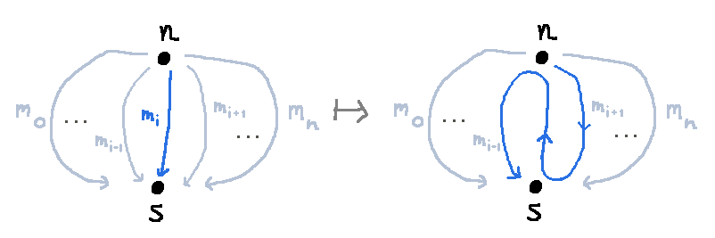
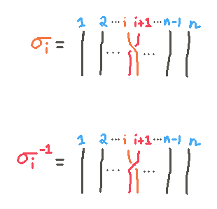
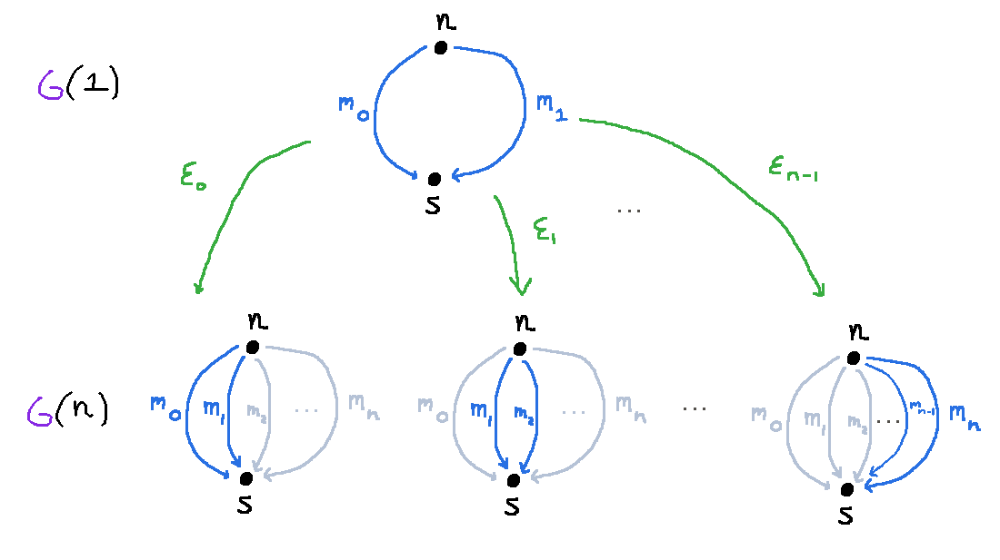

Thoughts on Braids
Define $G(n)$ to be the free groupoid on the following graph:

We have two objects, $\nn$ and $\ss$, and $n+1$ morphisms running between them, $m_0, \ldots, m_n$, as well
as their inverses $m^{-1}_0, \ldots, m^{-1}_n$.
Let's define a sequence of functors $(\sigma_i : G(n) \to G(n) \st i \in \{1, \ldots, n-1\})$ like so:
\[
\begin{array}{rcl}
\sigma_i(\nn) &=& \nn\\
\sigma_i(\ss) &=& \ss\\
\sigma_i(m_j) &=& j \qquad (i \ne j)\\
\sigma_i(m_i) &=& m_{i-1}m_i^{-1} m_{i+1}\\
\end{array}
\]
This maps one of the morphisms in the category into a zig-zag involving the preceding and succeeding morphisms:

We can define functors $\sigma^{-1}_i$ very similarly:
\[
\begin{array}{rcl}
\sigma^{-1}_i(\nn) &=& \nn\\
\sigma^{-1}_i(\ss) &=& \ss\\
\sigma^{-1}_i(m_j) &=& j \qquad (i \ne j)\\
\sigma^{-1}_i(m_i) &=& m_{i+1}m_i^{-1} m_{i-1}\\
\end{array}
\]
Claim
I claim that these functors behave just like the generators of the
Artin braid group on $n$ strands.
The functor/generator $\sigma_i$ realizes the crossing of the $i^{th}$ and the $(i+1)^{th}$ strands in one
direction, and $\sigma_i^{-1}$ the other direction.

We have the following properties:
- $\sigma_i \sigma^{-1}_i = \mathsf{id} = \sigma^{-1}_i \sigma_i$. Let's see why, for example,
$\sigma_i \sigma^{-1}_i m_i = m_i$.
\[
\begin{array}{rcl}
\sigma_i \sigma^{-1}_i m_i &=& \sigma_i (m_{i+1}m_i^{-1} m_{i-1}) \\
&=& (\sigma_i m_{i+1})(\sigma_i (m_i^{-1}))(\sigma_i m_{i-1}) \\
&=& m_{i+1}(\sigma_i (m_i^{-1})) m_{i-1} \\
&=& m_{i+1}(\sigma_i m_i)^{-1} m_{i-1} \\
&=& m_{i+1}(m_{i-1}m_i^{-1} m_{i+1})^{-1} m_{i-1} \\
&=& m_{i+1}m_{i+1}^{-1} m_i m_{i-1}^{-1} m_{i-1} \\
&=& (m_{i+1}m_{i+1}^{-1}) m_i (m_{i-1}^{-1} m_{i-1}) \\
&=& m_i \\
\end{array}
\]
- $\sigma_i \sigma_j = \sigma_j \sigma_i$ when $|i-j| > 1$.
- $\sigma_i \sigma_j \sigma_i = \sigma_j \sigma_i \sigma_j$ when $|i-j| = 1$. ("the third reidemeister move")
Let's check for example $\sigma_1\sigma_2 \sigma_1 = \sigma_2 \sigma_1 \sigma_2$.
For brevity, we write $\mathsf{0123\cdots}$ for $m_0 m_1 m_2 m_3\cdots$ and $\mathsf{\bar 0\bar1 \bar2 \bar3\cdots}$ for $m_0^{-1}m_1^{-1}m_2^{-1}m_3^{-1}\cdots$.
\[\begin{array}{rcl}
\sigma_1\sigma_2 \sigma_1 (\mathsf{1}) &=&\sigma_1\sigma_2 (\mathsf{0 \bar 12}) \\
&=&\sigma_1 (\mathsf{0 1(1\bar2 3)}) \\
&=&\sigma_1 (\mathsf{0 \bar2 3}) \\
&=&\mathsf{0 \bar2 3} \\
&=&\mathsf{0\bar 1 (1 \bar 2 3)} \\
&=&\sigma_2 (\mathsf{0\bar 1 2}) \\
&=&\sigma_2\sigma_1 (\mathsf{1}) \\
&=&\sigma_2\sigma_1 \sigma_2 (\mathsf{1})
\end{array}
\qquad\qquad
\begin{array}{rcl}
\sigma_1\sigma_2 \sigma_1 (\mathsf{2}) &=&\sigma_1\sigma_2 (\mathsf{2}) \\
&=&\sigma_1 (\mathsf{1\bar2 3}) \\
&=& (\mathsf{(0\bar 1 2) \bar2 3}) \\
&=&\mathsf{0 \bar1 3} \\
&=&\sigma_2 \mathsf{0 \bar1 3} \\
&=&\sigma_2 (\mathsf{(0\bar 1 2) \bar2 3}) \\
&=&\sigma_2\sigma_1 (\mathsf{1\bar 2 3}) \\
&=&\sigma_2\sigma_1 \sigma_2 (\mathsf{2})
\end{array}
\]
Characterizing the Braid Subset
The above properties let us map the braid group into the automorphisms of the groupoid $G(n)$, but
of course there are lots of other functors $G(n) \to G(n)$ that are not generated by the $\sigma_i, \sigma^{-1}(i)$.
For one thing, we could swap $\nn$ and $\ss$. But let's fix an $n$ and
try to note some properties that are possessed by all functors
$F$ that are composites of some sequence of $\sigma_i, \sigma^{-1}(i)$.
Let's do the easy ones first:
- $F \nn = \nn$
- $F \ss = \ss$
- $F m_0 = m_0$
- $F m_n = m_n$
Now let's think about some ways that $G(1)$ can map into $G(n)$. The groupoid $G(1)$ is just the circle.
Define $\mathcal E_i : G(1) \to G(n)$ to be the functor that takes
\[
\begin{array}{rcl}
\mathcal E_i(\nn) &=& \nn\\
\mathcal E_i(\ss) &=& \ss\\
\mathcal E_i(m_0) &=& m_i\\
\mathcal E_i(m_1) &=& m_{i+1}\\
\end{array}
\]

A property that we observe holds for any $F$ that arises as a composite of some sequence
$\sigma_i, \sigma^{-1}(i)$ is:
- There exists a permuation $\pi : \{0,\ldots,n-1\} \to \{0,\ldots,n-1\}$ such that
for every $i \in \{0,\ldots,n-1\}$
there is a natural isomorphism $F \circ \mathcal E_i \cong \mathcal E_{\pi i}$
Finally, we guess that these properties are enough to characterize an embedding of the braid group:
Conjecture: The subgroup of automorphisms of $G(n)$ that consist of the $F$ that satisfy properties (1)-(5) above is isomorphic to the Artin braid group $B_n$. If (5) is replaced by the stronger property
- For every $i \in \{0,\ldots,n-1\}$
there is a natural isomorphism $F \circ \mathcal E_i \cong \mathcal E_i$
then we obtain instead the pure braid group $P_n$.